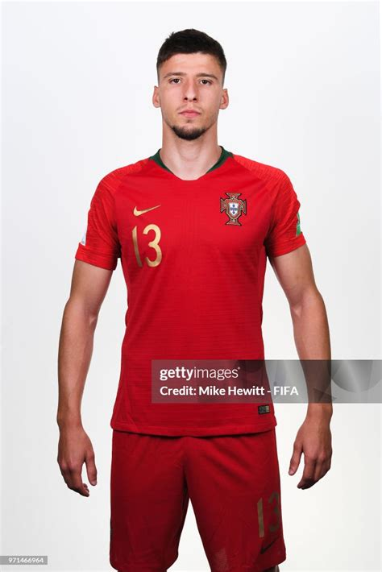

Rúben Dias
Datos interesantes
Defensa central sólido y líder en la zaga. Pilar defensivo del equipo.
Características
- Fuerza física
- Juego aéreo
- Anticipación
- Salida limpia
Logros
- Jugador del año Premier
- Defensa del año UEFA
- Campeón con City
- Eurocopa titular